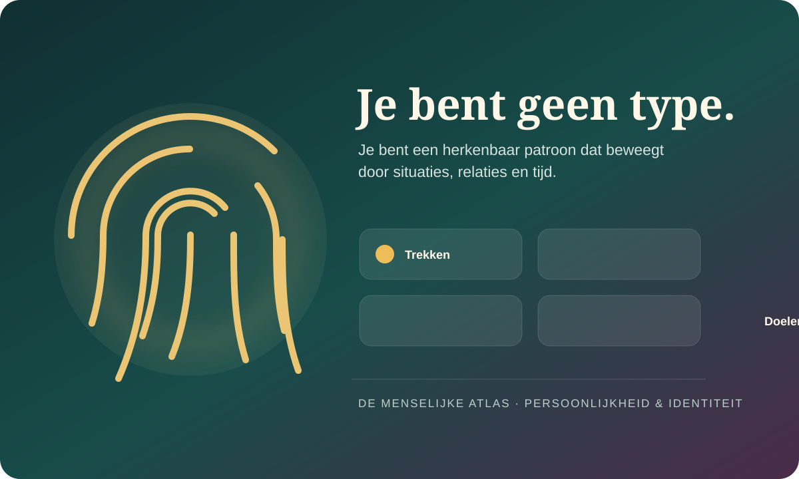
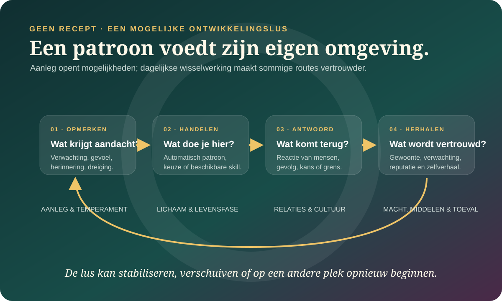

De kern in gewone taal
Je bent geen type. Je bent een patroon in beweging.
Persoonlijkheid gaat over relatief herkenbare verschillen in hoe mensen denken, voelen en handelen. “Relatief” is belangrijk: er zit continuïteit in, maar geen gevangenis. Dezelfde mens kan terughoudend zijn in een onbekende groep, uitbundig bij vrienden en moedig wanneer iets wezenlijks op het spel staat.
Je hebt niet één type. Je bevindt je op meerdere glijdende schalen, met nuance onder iedere brede score.
Een gemiddelde neiging kan herkenbaar zijn terwijl je gedrag sterk wisselt tussen situaties en rollen.
Doelen, waarden, relaties, cultuur en het verhaal dat je over jezelf maakt horen ook bij wie je bent.
“Ik ben nu eenmaal zo” kan beschrijving, belofte én kooi zijn.
Een identiteit geeft samenhang. Zinnen als “ik ben stil”, “ik ben chaotisch” of “ik zorg altijd voor anderen” kunnen helpen om terugkerende patronen te herkennen. Maar ze kunnen ook oude omstandigheden verbergen. Misschien was stil zijn ooit veilig. Misschien verschijnt je chaos vooral bij uitputting. Misschien werd zorgen de prijs voor verbondenheid.
Dat betekent niet dat iedere eigenschap een vermomd trauma is, of dat je alles kunt veranderen als je maar hard genoeg probeert. Het betekent alleen dat een etiket vaak een onderzoeksvraag kan worden: wanneer verschijnt dit patroon, wat probeert het mogelijk te doen en wanneer klopt het niet?
Een persoonlijkheidswoord vat een patroon samen. Het vertelt nog niet waardoor dat patroon ontstond, wat het beschermt of wat er morgen mogelijk is.
Vier lagen die samen bewegen.
Een score op een trek kan nuttig zijn, maar persoonlijkheid wordt rijker wanneer je ook kijkt naar situaties, motieven en levensverhalen. Deze lagen zijn geen concurrerende waarheden. Ze beantwoorden andere vragen.

Trekken
Hoe je gemiddeld geneigd bent te denken, voelen en handelen. Ze vatten patronen samen, maar verklaren hun oorzaak niet.
Situaties & rollen
Wie erbij is, wat er op het spel staat en hoeveel veiligheid of macht je hebt, beïnvloedt welk gedrag zichtbaar wordt.
Doelen & waarden
Wat je belangrijk vindt, probeert te bereiken of vreest te verliezen kan hetzelfde gedrag een heel andere betekenis geven.
Levensverhalen
De verbinding die je maakt tussen verleden, heden en mogelijke toekomst: wie was ik, wie ben ik en wie wil ik worden?
Twee mensen met ongeveer dezelfde score kunnen op specifieke gewoonten en reacties sterk verschillen. Een gemiddelde is een samenvatting, geen vingerafdruk op zichzelf.
Je persoonlijkheid heeft geen enkele geboorteplaats.
Baby’s verschillen al vroeg in activiteit, gevoeligheid en de snelheid waarmee ze kalmeren. Zulke temperamentverschillen kunnen voorlopers zijn van latere trekken, maar vormen geen blauwdruk. Ook genen “schrijven” geen karakter. Recente genomica wijst op duizenden genetische varianten met elk een minuscuul verband, niet op één gen voor introversie, impulsiviteit of vriendelijkheid.
Vanaf het begin ontstaat een wisselwerking. Een gevoelig kind kan andere reacties oproepen, andere situaties vermijden en andere vaardigheden oefenen dan een kind dat sneller toenadering zoekt. Ouders, school, kansen, cultuur en toeval reageren daarop. Later kiezen mensen deels zelf omgevingen die bij hen passen. Zo kan een patroon zijn eigen voorwaarden mee helpen creëren.

Aanleg opent een bereik
Biologische verschillen beïnvloeden gevoeligheden en waarschijnlijkheden. Ze leggen geen individueel levenspad vast.
Omgeving biedt én begrenst
Relaties, cultuur, gezondheid, middelen en macht bepalen welk gedrag wordt beloond, bestraft of überhaupt mogelijk is.
Herhaling maakt vertrouwd
Gedrag dat vaak wordt uitgevoerd kan gemakkelijker beschikbaar worden, zeker wanneer de omgeving het telkens bevestigt.
Betekenis stuurt de lus
Twee mensen kunnen dezelfde gebeurtenis anders begrijpen, andere doelen meenemen en daardoor een ander spoor volgen.
Een huwelijk, verhuizing, verlies of nieuwe baan verandert niet bij iedereen dezelfde trek in dezelfde richting. De betekenis, duur, vrijwilligheid, steun en dagelijkse eisen rondom de gebeurtenis doen ertoe.
Wat meten de Big Five eigenlijk?
De Big Five zijn een veelgebruikt beschrijvend model. Ze ontstonden grotendeels uit patronen in persoonlijkheidswoorden en vragenlijsten. Iedere dimensie loopt geleidelijk: bijna niemand zit volledig aan één uiterste. Een hoge of lage score is bovendien niet automatisch goed of slecht.
Openheid voor ervaringen
Nieuwsgierigheid, verbeelding en interesse in nieuwe ideeën of ervaringen. Veel openheid kan creativiteit voeden; minder openheid kan vertrouwdheid, focus en praktische continuïteit ondersteunen.
Zorgvuldigheid
Ordelijkheid, volharding en doelgerichtheid. Ze kan betrouwbaarheid brengen, maar in sommige contexten ook starheid of overcontrole. Minder ervan kan flexibiliteit brengen én planning lastiger maken.
Extraversie
Neiging tot positieve betrokkenheid, assertiviteit en sociale of actieve prikkels. Introversie is geen gebrek aan sociale vaardigheid en extraversie is geen garantie op verbondenheid.
Meegaandheid
Compassie, vertrouwen en bereidheid tot samenwerking. Veel meegaandheid kan verbinden, maar grenzen bemoeilijken; minder kan kritische onafhankelijkheid én harder conflict meebrengen.
Negatieve emotionaliteit
Gevoeligheid voor spanning, somberheid en dreiging; ook vaak neuroticisme genoemd. Zo'n gevoelig systeem kan belastend zijn én risico’s snel opmerken. Het is geen diagnose.
De Big Five kunnen zeggen welke antwoorden gemiddeld bij je passen. Ze vertellen niet rechtstreeks waarom, in welke relatie je anders wordt, welke waarden je draagt of welk leven bij je past.
Ook dit model is een keuze
Waarom vijf — en niet zes?
Het HEXACO-model voegt een brede dimensie eerlijkheid–bescheidenheid toe en ordent sommige andere trekken anders. Grootschalig onderzoek vindt dat die zesde dimensie extra informatie kan dragen, bijvoorbeeld rond uitbuiting en oprechtheid. Dat maakt de Big Five niet waardeloos; het toont dat een taxonomie een bruikbare ordening is, geen natuurwet met exact vijf vakken.
Bekijk de meta-analyse van Zettler en collega’s →Trek, toestand en vaardigheid zijn drie verschillende vragen.
Wie één keer moedig optreedt, is niet plots “een extravert”. En wie meestal terughoudend is, kan wel degelijk een groep leiden. Veel verwarring verdwijnt wanneer je onderscheid maakt tussen wat je gemiddeld doet, wat er nu gebeurt en wat je kúnt doen wanneer de situatie erom vraagt.
Trek
Wat doe je doorgaans, verspreid over relevante situaties en langere tijd?
“Ik begin gemiddeld minder snel een gesprek.”Toestand
Wat voel, denk of doe je nu, mede onder invloed van deze situatie?
“Vandaag praat ik veel omdat ik me veilig voel.”Vaardigheid
Wat kun je doelgericht inzetten, ook wanneer het niet je automatische voorkeur is?
“Ik kan een vergadering leiden als dat nodig is.”Persoonlijkheid kan juist zichtbaar worden in je “als–dan”.
Het persoon–situatieperspectief vraagt niet alleen hoe extravert ben je?, maar bijvoorbeeld: als ik onbekenden ontmoet, trek ik me terug; als iemand wordt buitengesloten, neem ik het woord. Zo’n terugkerend als–danpatroon kan stabieler en informatiever zijn dan één los gedrag.
Let op: contextafhankelijk gedrag is niet onecht. Verschillende rollen kunnen allemaal werkelijk bij jou horen. De vraag is eerder welke omstandigheden welk deel van je repertoire oproepen.
Wat weten we redelijk goed?
Persoonlijkheid is tegelijk stabiel en veranderlijk
Een grote meta-analyse van longitudinaal onderzoek laat zien dat mensen op termijn herkenbaar blijven ten opzichte van anderen, terwijl gemiddelde trekken en individuele patronen door de levensloop ook veranderen. Stabiliteit en verandering zijn dus geen tegenpolen.
Bekijk Bleidorn en collega’s →Je gedrag vormt een verdeling, geen enkel punt
Onderzoek van William Fleeson en collega’s beschrijft trekken ook als verdelingen van tijdelijke toestanden. Iemand kan gemiddeld introverter zijn en toch geregeld uitgesproken extraverte momenten hebben. Situaties en doelen helpen die variatie begrijpen.
Lees over Whole Trait Theory →Metingen kunnen tijdens interventies verschuiven
Een overzicht van 207 interventiestudies vond veranderingen in persoonlijkheidsmetingen, vaak binnen enkele maanden. Veel studies gebruikten zelfrapportage en klinische behandelingen. Dit bewijst dus niet dat iedereen zichzelf snel of volledig naar wens kan ontwerpen.
Bekijk Roberts en collega’s →Zelfkennis is belangrijk én onvolledig
Jij kent gedachten en motieven die niemand ziet; anderen merken soms gedragspatronen op waarvoor jij blinde vlekken hebt. Onderzoekers zoals Simine Vazire benadrukken daarom dat zelfkennis uit meerdere soorten informatie bestaat en moeilijk met één maat te vangen is.
Lees de recente consensus over zelfkennis →Persoonlijkheid verandert zelden door een nieuw etiket.
Verandering kan spontaan met leeftijd en omstandigheden optreden, tijdens behandeling ontstaan of bewust worden nagestreefd. Maar een wens als “ik wil zorgvuldiger worden” is nog geen mechanisme. Duurzamer wordt het wanneer dagelijkse toestanden, vaardigheden, verwachtingen en omgevingen dezelfde richting beginnen te ondersteunen.
Een eigen reden
Niet “zorgvuldigheid is beter”, maar: wat wil je kunnen doen dat nu moeilijk is? Een gekozen waarde geeft meer richting dan schaamte over je score.
Een concrete skill
Oefen plannen, grenzen stellen of een gesprek openen. Een vaardigheid vergroten is vaak preciezer en menselijker dan je hele persoonlijkheid willen vervangen.
Veel kleine toestanden
Een nieuw gedrag moet vaak genoeg werkelijk plaatsvinden om beschikbaar en vertrouwd te worden. Terugval betekent niet dat het oude patroon “de echte jij” is.
Steunende voorwaarden
Agenda’s, mensen, rust, veiligheid en feedback kunnen nieuw gedrag dragen. Sommige omgevingen blijven een oud patroon juist afdwingen.
Kijken wat het doet
Niet alleen meten of je score stijgt, maar ook: helpt dit gedrag, past het bij je waarden en wat kost het?
Misschien hoef je niet “een ander mens” te worden. Misschien heb je een ruimer repertoire nodig, zodat niet altijd hetzelfde deel van jou het werk moet doen.
Een persoonlijkheidstest meet antwoorden onder voorwaarden.
Een degelijke vragenlijst probeert meerdere voorbeelden van een trek samen te nemen en vergelijkt jouw patroon meestal met een referentiegroep. Dat kan betekenisvolle regelmaat zichtbaar maken. Maar zelfs een betrouwbare schaal blijft afhankelijk van de formulering, je zelfbeeld, de gekozen normgroep en de situaties die jij in gedachten neemt.
Wat voor instrument is dit?
Een gevalideerde trekschaal, een klinische screening, een selectie-instrument of een speelse internetquiz hebben niet dezelfde bewijskracht of bedoeling.
Met wie word je vergeleken?
“Hoog” betekent meestal hoog tegenover een bepaalde normgroep, niet objectief veel in iedere cultuur, leeftijd of context.
Wie geeft de informatie?
Zelfrapportage ziet motieven en innerlijke ervaring; mensen rondom jou zien terugkerend zichtbaar gedrag. Hun matige verschil kan informatie zijn, niet simpelweg bewijs dat één kant liegt.
Wat volgt er werkelijk uit?
Een groepsverband voorspelt geen individuele toekomst met zekerheid. Een score mag geen excuus, vonnis of diagnose worden.
Een test kan bij herhaling ongeveer dezelfde score geven en toch een te smal begrip meten, slecht bij jouw cultuur passen of voor jouw vraag nauwelijks relevant zijn.
Een goede kaart laat haar blinde vlekken zien.
Niet concluderen
“Mijn score is mijn echte zelf.”
Een score hangt af van vragen, taal, referentiegroep, stemming en context. Ze vat antwoorden samen; ze onthult geen verborgen essentie.
Niet verwarren
“Een trek verklaart de oorzaak.”
“Zij doet dat omdat ze introvert is” herhaalt soms alleen de observatie in een ander woord. Oorzaken kunnen biologisch, sociaal, historisch en situationeel verweven zijn.
Niet moraliseren
“Veranderen is altijd beter.”
Persoonlijkheidsgroei is geen plicht. Soms moet de omgeving veranderen, niet de mens die redelijk reageert op onveiligheid, uitputting of uitsluiting.
Niet universaliseren
“Vijf trekken passen overal exact.”
Er is brede internationale steun voor veel Big Five-patronen, maar taal, meetmethodes en westerse aannames begrenzen hoe universeel de precieze structuur is.
Lees Church over cultuur en persoonlijkheid →Open debat
Hoe breed mag een persoonlijkheidswoord zijn?
Brede trekken zijn overzichtelijk en voorspellend op groepsniveau. Onderzoekers zoals René Mõttus stellen dat specifieke nuances onder die trekken nog unieke informatie dragen. Anderen voegen doelen, verhalen of biologische systemen toe. Er bestaat dus niet één schaalniveau waarop de “ware persoonlijkheid” woont.
Zes hedendaagse stemmen die het beeld rijker maken.
Wiebke Bleidorn
Wat blijft herkenbaar — en wat verandert door een leven?
Haar levenslooponderzoek brengt stabiliteit en verandering in één beeld, zonder persoonlijkheid als lot of als volledig maakbaar project te behandelen.
William Fleeson & Eranda Jayawickreme
Wie ben je over honderd verschillende momenten?
Whole Trait Theory verbindt brede trekken met de concrete toestanden die in situaties verschijnen en met mogelijke verklarende processen.
Dan McAdams
Ben je alleen een actor, of ook een handelende en vertellende mens?
McAdams onderscheidt trekken, doelen en waarden, en narratieve identiteit: het verhaal waarmee iemand een leven samenhang probeert te geven.
Simine Vazire
Wie ziet jou het scherpst — jijzelf of de mensen rondom jou?
Haar werk over zelfkennis en reputatie maakt duidelijk dat toegang tot je binnenwereld niet hetzelfde is als een foutloos beeld van je gedrag.
René Mõttus
Wat verdwijnt wanneer vijf brede scores alles moeten samenvatten?
Het nuanceperspectief onderzoekt de specifieke trekjes onder facetten die unieke informatie kunnen dragen.
A. Timothy Church
Wiens taal en cultuur tekenden onze persoonlijkheidskaart?
Crosscultureel onderzoek ondersteunt delen van trekmodellen en laat tegelijk zien waar lokale, relationele en inheemse begrippen uit beeld kunnen vallen.
Oudere stemmen als verdieping: William James schreef over verschillende sociale zelven, Carl Rogers over congruentie en groei, en Nietzsche over wording en de verhalen waarmee we onszelf vastzetten. Dat zijn filosofische of humanistische gesprekspartners — geen vervanging voor hedendaags persoonlijkheidsonderzoek.
Van etiket naar patroon.
Kies één zin waarmee je jezelf vaak vastlegt, bijvoorbeeld “ik ben conflictvermijdend” of “ik maak nooit iets af”. Probeer de zin niet weg te denken. Maak hem nauwkeuriger.
- 1Schrijf de identiteitzin letterlijk op.
Gebruik je gewone woorden. Maak hem nog niet mooier of psychologischer.
- 2Zoek drie voorbeelden én twee tegenvoorbeelden.
Wanneer klopte de zin? Wanneer gedroeg je je duidelijk anders?
- 3Noteer de omstandigheden.
Wie was erbij? Hoe veilig, moe, machtig of verbonden voelde je je? Wat stond er op het spel?
- 4Scheid neiging van toestand.
Is dit een terugkerende gemiddelde neiging, een reactie op deze fase of allebei?
- 5Vraag wat je probeerde te beschermen of bereiken.
Welke behoefte, waarde, angst of relatie gaf het gedrag richting?
- 6Maak één kleine gedragsproef.
Niet “word extravert”, wel bijvoorbeeld: stel in één veilig gesprek eerst één eigen vraag of grens.
Stop wanneer dit onderzoek je overspoelt, je van jezelf vervreemdt of zware herinneringen openbreekt. Grond jezelf in het hier en nu en zoek steun. Zelfonderzoek hoeft geen eenzame krachtproef te zijn.
Ontmoet je beest — en spreek het daarna tegen.
De Beestenquiz vertaalt antwoordpatronen naar een archetype. Leuk en soms herkenbaar, maar niet gevalideerd en nooit je definitieve persoonlijkheid.
Wanneer verder kijken?
Een persoonlijkheidswoord is geen diagnose.
Langdurige psychische klachten, onveiligheid of een plotselinge sterke verandering in gedrag, denken of functioneren verdienen meer dan een online profiel. Bespreek ze met een huisarts of gekwalificeerde hulpverlener. Bij acuut gevaar neem je contact op met de lokale hulpdiensten.
Waarop dit dossier steunt.
- Meta-analyse · 2022Bleidorn et al. — Personality trait stability and change
Grote synthese van longitudinale data over stabiliteit en verandering door de levensloop.
- Theoretisch overzicht · 2015Fleeson & Jayawickreme — Whole Trait Theory
Verbindt trekken met wisselende toestanden en verklarende processen.
- Systematische review · 2017Roberts et al. — Personality trait change through intervention
Overzicht van veranderingen in persoonlijkheidsmetingen tijdens interventies, met belangrijke methodologische beperkingen.
- Overzicht · 2022Roberts & Yoon — Personality Psychology
Over trekken, motieven, vaardigheden en narratieve identiteit als verschillende domeinen van persoonlijkheid.
- Consensus · 2026Vazire et al. — What is self-knowledge?
Interdisciplinaire consensus over definities, bronnen en meetproblemen van zelfkennis.
- Overzicht · 2018Mõttus, Kandler et al. — Personality traits below facets
Over specifieke persoonlijkheidsnuances die niet volledig door brede trekken worden gevangen.
- Crosscultureel overzicht · 2018Church — The structure and measurement of personality across cultures
Wat crosscultureel trekonderzoek ondersteunt en waar meetmodellen begrensd blijven.
- Levensloopoverzicht · 2024Bleidorn — Toward a Theory of Lifespan Personality Trait Development
Actueel overzicht van robuuste ontwikkelingspatronen en de nog open vragen over genetische en omgevingsprocessen.
- Genomica-overzicht · 2026Schwaba et al. — Personality Genomics
Waarom genetische verbanden met persoonlijkheid polygeen zijn: zeer veel varianten met ieder een klein effect.
- Meta-analyse · 2024Bühler et al. — Life Events and Personality Change
Onderzoekt waarom levensgebeurtenissen geen eenvoudig of universeel persoonlijkheidseffect hebben.
- Procesmodel · 2009Ayduk & Gyurak — CAPS and rejection sensitivity
Illustratie van stabiele als–danpatronen waarin hetzelfde individu anders reageert in verschillende situaties.
- Meetonderzoek · 2015Olino & Klein — Self- and informant-reports of personality
Zelf- en naastenrapportages meten vergelijkbare constructen maar stemmen slechts matig overeen en kunnen elkaar aanvullen.
- Meta-analyse · 2020Zettler et al. — The HEXACO model of personality
Grootschalige toets van zes brede persoonlijkheidsdimensies, waaronder eerlijkheid–bescheidenheid.
Lees ook ons bronnenbeleid en het redactionele kompas van de Atlas.